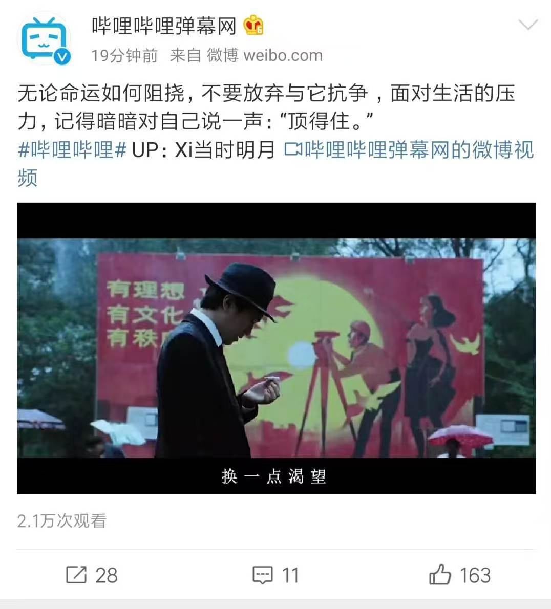
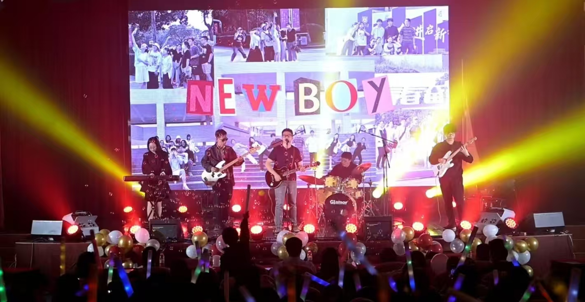
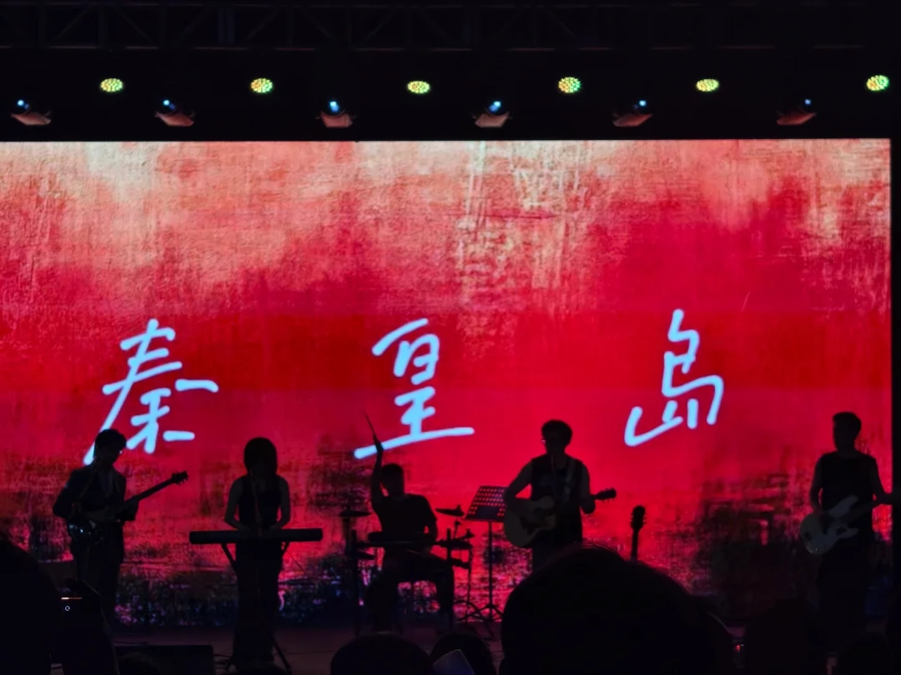

PM Fit 岗位匹配点 AIGC 趋势洞察完成 B站 AIGC 内容趋势研究和产品方案。 内容网感有真实投稿和百万播放内容经验。 Python 数据分析完成采集、清洗、指标、图表和报告自动化。 AI 工具落地从创作者工作流拆解 AI 辅助场景。
Interest Signals 兴趣展示 从内容创作到音乐现场，我习惯在真实反馈和舞台协作里理解情绪、节奏与表达。  作品被官方转发 作品曾被 B站官方微博转发，能从真实传播反馈里复盘选题和表达。  架子鼓 喜欢用鼓点组织节奏，也享受和队友在同一拍里完成配合。  乐队舞台演出 关注灯光、声音和现场氛围如何一起制造记忆点。